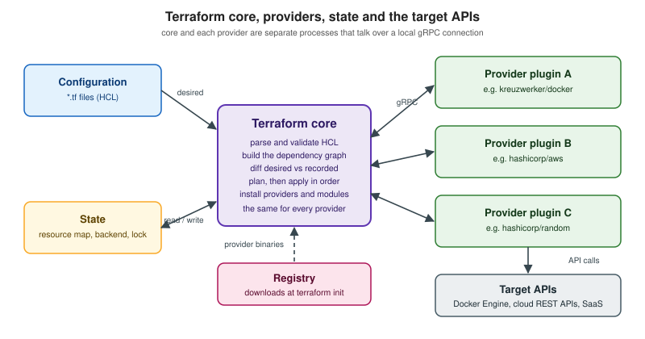

Import and Query
|
This content was generated with the assistance of AI and should be verified against the official documentation before being relied on in production. |
Terraform is easiest when it creates everything it manages. Real organizations rarely start that way. There is a storage bucket somebody created in the console three years ago, a PostgreSQL instance that predates the repository, a DNS zone owned by another team that now needs to be code. Terraform will not manage any of these until it has a binding between a real object and a resource address in a state. Creating that binding without creating or changing the object is what import means, and it is the main way to adopt existing infrastructure ("brownfield") into code.
This page describes importing as documented for Terraform 1.17 (released 2026-10-21) and OpenTofu 1.13 (latest
patch 1.13.2). It covers the legacy terraform import command, the configuration-driven import block, configuration
generation with terraform plan -generate-config-out, the list resource and terraform query workflow introduced in
Terraform 1.14 for discovering what exists and importing it in bulk, the search and import feature of HCP Terraform, and the
exporters that other tools provide. It follows State and
Backends and Remote State in the reading path, because import is
nothing more than a controlled way of writing a binding into state, and it leads into
Refactoring: moved, removed and import, where the same blocks
are used to restructure configuration rather than to adopt objects.
The examples use the Bookshelf scenario (catalog-api, reviews-api, web, PostgreSQL, Redis, a covers bucket).
Imagine that the covers bucket and the PostgreSQL instance were created by hand before Bookshelf had any Terraform. All
names, identifiers and values are placeholders. Provider resource arguments, import formats and identity schemas were
checked against the provider documentation for the AWS provider (6.x) and the Google provider (8.x), and every console
output on this page is abbreviated and marked as illustrative, because the exact text depends on provider versions.
What import really does
An import adds a resource instance to the state, bound to an existing remote object. Nothing else changes: the object is not created, modified or replaced by the import itself. Terraform asks the provider to read the object, and the provider returns every attribute it knows. Those attributes are written to state.
Two consequences follow, and both explain most of the mistakes people make with import.
-
State is not configuration. After an import the state contains the full object, but the configuration may contain nothing. A
resourceblock must exist for the address (or be generated, see Generating configuration with -generate-config-out), because on the next plan Terraform compares configuration to state, and a resource that is in state but not in configuration is planned for destruction. The official docs state the rule directly: define aresourceblock for any resource in state to prevent Terraform from destroying it. -
Arguments that are missing from the block take their defaults. If the object has non-default settings and the
resourceblock does not mention them, the next plan shows an update that would reset them. The docs recommend including every provider-specific argument that has a non-default value so that Terraform does not change the object on the next apply.
The third rule is the one the state documentation puts in a single sentence. Terraform expects a one-to-one mapping between remote objects and resource instances. If you import the same object into two addresses, Terraform "may behave unexpectedly". Guaranteeing the mapping is your job once you import by hand.
Importability is a property of each resource type, not of Terraform. A resource can be imported only if its provider implements the import logic, and the "Import" section at the bottom of each resource page in the registry says whether it does and in which format. Problems importing a particular type are reported to the provider repository. Authors who want to add import support to their own provider find the contract in the plugin development documentation, which this section describes on Provider Development.
Identifying the object: id and identity
Every import has to say which remote object is meant. Terraform supports two ways of saying it, and a resource may support one or both.
| Form | What it is |
|---|---|
|
A single string issued by the cloud, such as an S3 bucket name, an RDS instance identifier or a Google Cloud
|
|
An object of named values that together identify the resource, defined by the provider as the resource’s identity
schema. The keys and values are specific to the resource type and provider. Terraform 1.12 added the |
The official overview gives the AWS provider’s S3 bucket as the example: its identity is made of account_id, bucket
and region, whereas aws_instance is identified by its id. The provider documentation lists the identity schema
under each resource’s "Import" section, with the required attributes first and the optional ones (for S3 buckets
account_id and region) after. Two import forms for the same covers bucket look like this in the AWS provider
documentation:
# id form: the bucket name
import {
to = aws_s3_bucket.covers
id = "bookshelf-covers-example"
}
# identity form (Terraform 1.12 and later): the same bucket described by its identity schema
import {
to = aws_s3_bucket.covers
identity = {
bucket = "bookshelf-covers-example"
}
}Identity has three practical advantages over a bare id string. It is a structured value, so a provider does not have to
invent a delimiter syntax and users do not have to escape one. It is stable across runs, which is why HCP Terraform uses it
to recognize that an object found by a search is already managed by another workspace. And it is what terraform query
returns for every result, which makes the query output directly usable as import input. A resource that has not been
updated by its provider to support identity still imports with id only, and the OpenTofu documentation says so
explicitly: not all resource types have been updated to support identity yet.
An import block cannot contain both arguments. Choose one: id and identity are mutually exclusive.
Inspecting identities already in state
terraform state identities lists the identities of the resource instances that are already in state, in JSON. It is the
quickest way to learn what identity a provider stores for a type, and to see what an import produced. The -json flag is
required, resources without an identity are omitted, an optional address filters by resource or module, and -id=<id>
filters to the instance whose id attribute equals the string.
$ terraform state identities -json aws_s3_bucket.covers
# abbreviated and illustrative
{
"aws_s3_bucket.covers": {
"account_id": "111122223333",
"bucket": "bookshelf-covers-example",
"region": "eu-west-1"
}
}The values above are placeholders (the account number is the conventional example one), and the exact keys are decided by the provider version in use.
Choosing between the tools
Terraform offers several ways to reach the same state. They differ in whether the step is reviewed, whether configuration is written for you, and how many objects one run can handle.
terraform import command |
import block |
import block with -generate-config-out |
terraform query with -generate-config-out |
|
|---|---|---|---|---|
Writes to |
State immediately |
State, when the plan is applied |
State, when the plan is applied |
Nothing in state. It prints or generates |
Reviewed in a plan |
No |
Yes |
Yes |
The later import is reviewed. The query itself only reads |
Writes the |
No, you write it first |
No, you write it |
Yes, as a template |
Yes, for the results, together with the |
How many objects |
One per run |
Many, with |
Many |
Everything a |
Needs object ids |
Yes |
Yes |
Yes |
No, they are discovered |
Needs Terraform |
Any |
1.5, 1.6 for expressions in |
1.5 |
1.14 |
The documentation’s guidance is consistent. Write the resource block yourself when you know how to configure all or most
of its arguments. Use generated configuration when importing several resources or one complex resource whose configuration
you do not already have. Use the bulk workflow when you cannot easily get at the ids at all. The CLI command remains for
one-off repairs and for scripts that predate import blocks.

The terraform import command
terraform import is the original mechanism. Its syntax is terraform import [options] ADDRESS ID. Terraform finds the
object from the ID and writes it to state at ADDRESS. The address must be a valid resource address, and because any
resource address is valid, the command can import into a module’s resource as well as into the root, and into a single
instance of a resource that uses count or for_each.
The prerequisites are the same as for blocks, with one difference in the order of work. The command only changes the
state: it does not generate configuration. You write the resource block first (it does not have to be complete, you
can finish the arguments after the import), run the command, then run terraform plan and adjust the block until the
plan shows no unexpected changes.
# 1. a minimal destination block already exists in main.tf:
# resource "aws_s3_bucket" "covers" {}
# 2. bind the existing bucket to it (the id is the bucket name)
terraform import aws_s3_bucket.covers bookshelf-covers-example
# 3. see what the empty block would change, and fill in the block until the plan is clean
terraform planAddressing modules and indexed instances
The address can reach into modules and into expanded instances. Quote it so the shell does not interpret brackets and double quotes.
# a resource inside a module
terraform import module.database.aws_db_instance.postgres bookshelf-postgres
# the first instance of a resource that uses count
terraform import 'aws_instance.web[0]' i-abcd1234
# the "example" instance of a resource that uses for_each (Linux, macOS, other UNIX shells)
terraform import 'aws_instance.web["example"]' i-abcd1234The quoting differs by shell. The reference shows 'aws_instance.baz[\"example\"]' for PowerShell and an unquoted
aws_instance.baz[\"example\"] for Windows cmd.exe. Instance ids in the examples (i-abcd1234) are the
documentation’s placeholders.
Flags and their meaning
All flags are optional.
| Flag | Meaning |
|---|---|
|
Directory of configuration files that configure the provider for the import. Defaults to the working directory. If it contains no configuration files, the provider must be configured through prompts or environment variables. |
|
Whether to ask for input for provider configuration. |
|
Do not hold a state lock during the operation. Dangerous if others can run commands against the same workspace. |
|
How long to retry acquiring the state lock. |
|
No color in the output. |
|
Limit on the number of concurrent operations while walking the graph. Defaults to 10. |
|
Deprecated. Overrides the provider configuration used for the import. By default Terraform uses the provider of the
target resource, which is almost always right. Use the |
|
Set variables in the configuration. |
|
Accepted only with the HCP Terraform CLI integration or the |
|
Legacy options accepted only with the |
Provider configuration during an import
Terraform loads the configuration files to learn how the provider is configured, with one limitation: the provider configuration used by an import must not depend on non-variable inputs. A provider block that reads a data source, for example, cannot be used, because nothing has been read yet. Where no configuration is present Terraform prompts, and provider environment variables such as the AWS credentials chain work as usual. Keep credentials out of files: use the provider’s environment variables or an OIDC role, as described in Providers.
Complex imports
Some imports bring in more than one object. The usage page’s example is an AWS network ACL, which imports the
aws_network_acl and also one aws_network_acl_rule per rule. The secondary resources do not exist in configuration, so
you must read the import output and create a resource block for each of them. If you do not, the next run plans to
destroy the objects that were imported. If you want to rename or move imported resources afterwards, the terraform state
commands or a moved block can do it, see State.
Limits of the command
The command has no plan. A mistake, such as importing the right object to the wrong address, is written straight to state,
and the only reviewable step comes after. It handles one object per run, so importing 40 objects means 40 invocations and
40 state locks. It cannot be code-reviewed in a pull request, and with HCP Terraform it runs locally: commands such as
apply run in HCP Terraform, but import does not have access to the information stored in the remote workspace, so you
may need to set local variables equivalent to the workspace variables. For these reasons the official documentation now
points to the import block as the way to automate imports in CI/CD pipelines.
The import block
An import block states, in configuration, that Terraform should bind a remote object to an address. Because it is
configuration, the import appears in the plan, is reviewed in a pull request, runs in CI like any other change, and can be
repeated safely. The block was introduced in Terraform 1.5 (2023-06-12) for the root module and has gained arguments
and places to live since, summarized in What changed recently.
Arguments
| Argument | Type | Meaning |
|---|---|---|
|
address, required |
The address of the resource instance that receives the object. It must match the address of a |
|
string |
The provider’s id for the object. A string or an expression that evaluates to a string, and it must be known during
the plan. Its format depends on the resource type. Mutually exclusive with |
|
map |
An object of key-value pairs that identifies the object, defined by the provider’s identity schema. Mutually
exclusive with |
|
map or set of strings |
Repeats the block to import several similar objects without separate blocks, exposing |
|
reference |
Imports with a specific provider configuration, such as |
The reference recommends either a single imports.tf file for all import blocks or placing each block beside its
destination resource block. Both work. A single file is easy to delete after the migration. Co-location documents the
origin of the resource where somebody maintaining the resource will read it.
A first import, with the resource written by hand
This is the workflow the documentation describes as the one to prefer when you know how to configure the resource. It has
four steps: define the destination resource block, add the import block, run terraform plan and check that the import
plan is what you want, then apply.
terraform {
required_version = ">= 1.12.0"
required_providers {
aws = {
source = "hashicorp/aws"
version = "~> 6.0"
}
}
}
provider "aws" {
region = "eu-west-1"
}
# The destination block. Only arguments with non-default values need to be present.
resource "aws_s3_bucket" "covers" {
bucket = "bookshelf-covers-example"
tags = {
app = "bookshelf"
}
}
import {
to = aws_s3_bucket.covers
id = "bookshelf-covers-example"
}$ terraform plan
# abbreviated and illustrative
aws_s3_bucket.covers: Preparing import... [id=bookshelf-covers-example]
aws_s3_bucket.covers: Refreshing state... [id=bookshelf-covers-example]
Terraform will perform the following actions:
# aws_s3_bucket.covers will be imported
resource "aws_s3_bucket" "covers" {
bucket = "bookshelf-covers-example"
...
}
Plan: 1 to import, 0 to add, 0 to change, 0 to destroy.The plan summary has its own counter for imports: 1 to import, 0 to add, 0 to change, 0 to destroy. If the same plan
also shows an update to the imported resource, the resource block disagrees with the real object, and you should adjust
the block until the only line is the import, or accept the update knowingly. After terraform apply Terraform records
that it imported the resource and did not create it, and the final line reads Apply complete! Resources: 1 imported, 0
added, 0 changed, 0 destroyed.
Import blocks are idempotent
An applied import block does no harm when it stays in the configuration. After the resource is in state, the next plan
does not plan the import again, and importing into the same address twice has no effect. The documentation therefore
allows both choices: remove the blocks after the import, or keep them "as a record of the resource’s origin for future
module maintainers". Keeping them makes the repository a record of which resources were adopted and which were created.
Removing them keeps the code free of historical noise. Whichever you choose, apply the same policy across the project.
Because the block lives in configuration, terraform plan also validates it. Terraform 1.10 improved the validation of
import blocks to catch more invalid cases during terraform validate, and Terraform 1.5 made check blocks run during an
import, so a health check declared with the resource can verify the imported object immediately, see
Lifecycle, Validation and Checks.
Dynamic values in the id
Terraform 1.5 only accepted a literal string for id. Terraform 1.6 (2023-10-04) made id accept expressions that refer
to other values, such as resource attributes, as long as the value is a string known at plan time. Terraform 1.7 added
for_each. Two restrictions are worth remembering.
-
The
idmust be known when the plan is computed. An id that comes from an attribute that is only known after apply cannot be used. -
The
for_eachexpression cannot refer to the import target (a fix of Terraform 1.12 closed that loophole), and anidthat references thetoresource itself crashed Terraform in older releases until a Terraform 1.9 patch fixed the crash, so treat the target as unavailable inside its own import block.
Importing several instances
The destination resource block can use count or for_each, and each import then names the instance that receives the
object.
# Import one specific instance of a resource that uses for_each
import {
to = aws_instance.web["catalog-api"]
id = "i-abcd1234"
}
resource "aws_instance" "web" {
for_each = toset(["catalog-api", "reviews-api"])
ami = "ami-12345678"
instance_type = "t3.micro"
}The documentation’s own example imports into the env key of a map. The principle is the same for count, where the index
is a number such as aws_instance.example[0]. Instances that are not named by an import block are planned for creation
in the usual way, so an incomplete list of imports on a resource with several instances creates the remaining ones.
Importing many with for_each
Since Terraform 1.7 one block can import a collection. The for_each of the block pairs with the for_each of the
destination resource, and the keys of the map line up the object with the instance.
locals {
# key => id of the existing bucket. Here the keys are the environments Bookshelf runs in.
covers_buckets = {
staging = "bookshelf-covers-staging"
prod = "bookshelf-covers-prod"
}
}
import {
for_each = local.covers_buckets
to = aws_s3_bucket.covers[each.key]
id = each.value
}
resource "aws_s3_bucket" "covers" {
for_each = local.covers_buckets
bucket = each.value
}The reference also shows a list of objects, each describing a module instance and the resource inside it, imported into
the address module.group[each.value.group].aws_s3_bucket.this[each.value.key]. That is the pattern for adopting a whole
family of resources that already exist in several modules. Terraform 1.10.1 removed a restriction that an expanded
resource block could only be used together with imports that use for_each, so a count or for_each resource can now be
combined with separate import blocks as shown in the previous section.
A map built by hand is fine for a handful of objects. For dozens, keep the ids in a data file and decode it into a local, so the configuration does not change when the inventory does.
locals {
# imports.json contains: { "staging": "bookshelf-covers-staging", "prod": "bookshelf-covers-prod" }
covers_buckets = jsondecode(file("${path.module}/imports.json"))
}An inventory file like that can come from a cloud CLI listing, from a spreadsheet exported as CSV (use csvdecode), or
from the output of terraform query -json, described later. Because file() is evaluated at plan time, the ids are known
when Terraform needs them. The functions themselves are described on
Functions.
Selecting a provider configuration
When the object belongs to a non-default provider configuration, name it. The same alias must be used by the destination resource.
provider "aws" {
region = "eu-west-1"
}
provider "aws" {
alias = "us"
region = "us-east-1"
}
import {
provider = aws.us
to = aws_s3_bucket.covers_replica
id = "bookshelf-covers-us"
}
resource "aws_s3_bucket" "covers_replica" {
provider = aws.us
bucket = "bookshelf-covers-us"
}Multi-region and multi-account providers are described on Providers. The
provider meta-argument is the replacement of the deprecated -provider flag of the command. Terraform 1.16 patch releases fixed a bug
in import provider resolution, and Terraform 1.16.0 made import blocks respect provider local names, which matters when
required_providers gives a provider a name different from its source address.
Import blocks and modules
There are two different things to distinguish.
Importing into a resource that is inside a module has been possible since the block was introduced. The block lives in
the configuration where you run Terraform, and its to argument carries the module prefix:
# main.tf in the root module
import {
to = module.instances.aws_instance.example
id = "i-abcd1234"
}The matching resource "aws_instance" "example" block is in the module, in the documentation’s example
instances/main.tf. Since Terraform 1.9 an import block that points to a module that does not exist is an error, where
earlier versions silently ignored it. If an upgrade surfaces such an error, fix the address or remove the block.
Declaring the import block itself inside a module became possible in Terraform 1.16 (2026-08-26): the release notes
list the line that import blocks inside modules are now supported. Before that, import blocks were a root-module feature, which
forced module authors to ask every caller to add the import in their root. With 1.16 a module can carry its own imports,
which is useful in two situations: a module that wraps an existing resource and ships the import next to it, and a
reusable "adopt" module for the common objects of an organization. The official reference documents only the
root-to-module example above. The semantics of the to address when the block is inside a child module (whether it is
relative to that module) are not described on the pages I checked, so verify them against your own plan output before
publishing a module that relies on them. A Terraform 1.15 patch release fixed child module validation so that invalid blocks, among them
list, import, backend and cloud, now raise diagnostics.
The general design of modules, including whether a module should adopt objects at all, belongs to Modules and Module Development and Publishing.
Imports and destroy
Imports are processed as part of planning, so a terraform destroy also evaluates them. Terraform 1.9 fixed a case in
which an import block could block a destroy operation when the target had already been deleted, and OpenTofu 1.9 skips
the import logic on tofu destroy. Keeping import blocks around is therefore safe in the supported versions, but
if you maintain a configuration across old Terraform releases remove them once the migration is complete.
Generating configuration with -generate-config-out
Writing the resource block for a complex object, a database with 40 attributes, a load balancer with listeners, is the
tedious part of an import. Terraform can generate it. Add an import block with no matching resource block and run
terraform plan with -generate-config-out=<path>, where the path is a new file. Terraform asks the provider for the
attributes of the object and writes a resource block with its best guess at the value of each argument.
The feature has been available since Terraform 1.5 and is still documented as experimental: later minor versions may change the formatting of the generated configuration and the behavior of the flag.
Workflow
-
Add the
importblock, inimports.tfor any file. Thetoargument becomes the address of the generated resource, andid(oridentity) points at the object. -
If no other resource in the configuration uses the provider, add a
providerblock so that Terraform knows which one to use, and runterraform initagain when you add it. -
Run
terraform plan -generate-config-out=generated.tf. Terraform shows the import plan and writes the file. The path must not exist, or Terraform reports an error. -
Review the file. Move the resources to the right files or modules, remove arguments you do not need, replace literals with variables and references.
-
Run
terraform apply, then commit the configuration.
# imports.tf
import {
to = aws_db_instance.postgres
identity = {
identifier = "bookshelf-postgres"
}
}$ terraform plan -generate-config-out=generated.tf
# abbreviated and illustrative
aws_db_instance.postgres: Preparing import... [identifier=bookshelf-postgres]
aws_db_instance.postgres: Refreshing state... [identifier=bookshelf-postgres]
Terraform will perform the following actions:
# aws_db_instance.postgres will be imported
# (config will be generated)
resource "aws_db_instance" "postgres" {
...
}
Plan: 1 to import, 0 to add, 0 to change, 0 to destroy.
Warning: Config generation is experimental
Terraform has generated configuration and written it to generated.tf. Please review the configuration and edit it as
necessary before adding it to version control.The shape of the output above follows the documentation’s aws_iot_thing example, with the Bookshelf names substituted.
The full generated file for a real PostgreSQL instance is long and differs per provider version, so it is not reproduced.
terraform plan itself accepts the flag as an experimental option: it generates HCL for any imported resource that is not
already present, writes it to a new path, and if the plan fails for another reason Terraform may still attempt to write
configuration.
Cleaning up generated configuration
Generated HCL is a starting point, and a good generator output is not necessarily good configuration. The official advice is to iterate: remove some attributes, adjust the value of others, and rearrange the blocks into files and modules. In practice, three kinds of edit are worth doing every time.
-
Remove arguments that only restate defaults or are computed. A shorter block is easier to review and survives provider upgrades better. After each removal run
terraform plan: the goal is a plan that shows no changes for the imported resource. -
Replace literals with references. The generated block contains a subnet group name or a security group id as a string. Where Bookshelf already manages the network in the same configuration, a reference such as
aws_db_subnet_group.postgres.namemakes the dependency visible to the graph. -
Never commit secrets. Do not put real passwords in generated code. Values for sensitive arguments come from variables or from a secrets store, see Sensitive Data, Ephemeral Values and Write-only Arguments. The OpenTofu documentation states that for sensitive or write-only attributes the generated value is
nullwith a comment hint, so the placeholder has to be replaced by hand. The Terraform page does not describe this case, so verify it on the version you use.
Limitations
The configuration is built from the values the provider returns. For resources with complex schemas the provider can
return values that are individually valid but not valid together. The documentation’s example is ipv6_address_count
conflicting with ipv6_addresses on aws_instance. Terraform still writes the file, reports a Conflicting
configuration arguments error, and you fix the block by removing one of the two arguments, then run terraform plan
again. Resources that are already in state are skipped, so run the command again after a first import and nothing more is
generated for them.
Several fixes over the years improved the output: Terraform 1.8 generates strings that contain valid JSON as calls to
jsonencode rather than as one long string, which is easier to read and lets you replace part of it with an expression,
and Terraform 1.10 simplified the generation of string attributes that contain numbers or booleans. OpenTofu’s
documentation adds a caveat of its own: generating configuration is currently not possible when for_each is used on
import blocks. The Terraform documentation does not list that limitation, so test a for_each import with
-generate-config-out before relying on it.
Bulk import
Bulk import covers two different problems that are easily confused: you know the ids and you do not. They need different tools.
| Situation | Tool | Result |
|---|---|---|
You have an inventory of ids |
|
One reviewable plan that adopts all of them. |
You need to find what exists |
|
A list of discovered objects and, with |
The objects live in a cloud with its own exporter |
The cloud’s export tool, for example |
Terraform HCL to review, then import. |
The first row is the for_each pattern of the previous sections. The remainder of this section describes the rest.
List resources and terraform query
Until Terraform 1.14 every import started from an id you already had. Discovering what exists was left to cloud CLIs and
console exports, and the result had to be turned into ids by hand. Terraform 1.14.0 (2025-11-19) added list resources:
HCL queries stored in .tfquery.hcl files, and a new command, terraform query, that runs them. A list resource is
implemented by the provider next to the ordinary resource of the same type, so it reuses that resource’s schema and
identity. It is a read-only operation: it does not plan or apply anything and does not change infrastructure.
Requirements
-
Terraform 1.14 or later for
terraform query,.tfquery.hclfiles andlistblocks. HCP Terraform needs a workspace on 1.14 or newer for the search feature. -
Terraform 1.12 or later to search by resource identity, which is also what lets HCP Terraform know that a resource is already managed in another workspace.
-
A provider version that implements a list resource for the type you want. Not every resource type has one. The AWS provider documents list resources for types such as
aws_s3_bucket,aws_db_instanceandaws_instance, and the Google provider documents them forgoogle_storage_bucket,google_service_account,google_compute_instance,google_dns_managed_zoneand others, in alist-resourcesfolder of each provider’s documentation. The AWS documentation for some of them still labels the list resource a beta technical preview, so check each page before you depend on it. -
Policy evaluation of query results needs Terraform 1.17.0 or later (see Evaluating policies against query results).
The query file
The query is split across the standard configuration and a query file. The standard .tf configuration declares
required_providers (and a cloud block if you want to compare results with HCP Terraform workspaces), so that
terraform init installs the providers. The query file has the extension .tfquery.hcl and contains list blocks.
list blocks are only valid in .tfquery.hcl files. Terraform 1.15 (2026) made terraform fmt format these files.
| Argument | Meaning |
|---|---|
|
The block header: the resource type to search for (provider specific) and a label, unique in the directory. The block is
referred to as |
|
Required. The provider configuration the query uses. It is read from the |
|
A block of provider-specific arguments, such as regions, filters or projects. See the provider’s list resource page. |
|
Boolean. By default only the resource identity of each result is returned. With |
|
Maximum number of results for the block, by default |
|
Meta-arguments for running several queries from one block. They are mutually exclusive. |
A query file can also contain variable and locals blocks, to parameterize a query that is reused with different
inputs, and provider blocks for alternative provider configurations.
For Bookshelf, three queries answer the first questions of an adoption project: which S3 buckets exist in the region, which running instances carry the Bookshelf name prefix, and which RDS instances exist.
# main.tf
terraform {
required_version = ">= 1.14.0"
required_providers {
aws = {
source = "hashicorp/aws"
version = "~> 6.0"
}
}
}
provider "aws" {
region = "eu-west-1"
}# bookshelf.tfquery.hcl
list "aws_s3_bucket" "all" {
provider = aws
}
list "aws_instance" "running" {
provider = aws
limit = 50
config {
filter {
name = "tag:Name"
values = ["bookshelf-*"]
}
filter {
name = "instance-state-name"
values = ["running"]
}
}
}
list "aws_db_instance" "databases" {
provider = aws
}The filter block shape (name, values, several filter blocks all having to match) and the include_auto_scaled
option come from the AWS list resource for aws_instance, which also documents that instances managed by an Auto Scaling
group and instances in the terminated or shutting-down state are excluded by default. aws_s3_bucket and
aws_db_instance accept an optional region argument that defaults to the provider region.
The Google provider follows the same layout, with a config block of its own. For Cloud Storage buckets the only
argument is an optional project, which defaults to the provider project, and the results carry the bucket name and the
project as identity.
# bookshelf-gcp.tfquery.hcl
list "google_storage_bucket" "all" {
provider = google
config {
# optional, defaults to the project of the provider
# project = "bookshelf-prod-example"
}
}The Google provider also publishes a guide that explains the file layout, the Terraform version requirement (1.14 or later)
and the shared list arguments for that provider.
Parameterizing and repeating queries
Query files accept the same parameterization as the rest of the language. A variable lets the same file serve several
environments, and count or for_each run one query for each element.
variable "max_results" {
type = number
default = 200
}
list "aws_s3_bucket" "all" {
provider = aws
limit = var.max_results
}
list "aws_db_instance" "databases" {
provider = aws
count = 2
}The block reference says that limit can be a reference that resolves to a number, and that count is most suitable for
several identical or nearly identical lists, while for_each suits lists built from the attributes of a map or a set (its
examples use tomap() and toset()). The count = 2 above only illustrates the syntax; in practice count is
usually driven by a variable, as in the reference’s example that runs one query per subnet id. Values for variables are
given with -var or -var-file, in addition to terraform.tfvars and *.auto.tfvars.
Running terraform query
terraform query [flags] [options] checks the current directory for .tfquery.hcl files, queries remote infrastructure
for the list blocks, and prints the results. By default each result contains a reference to the list block in the form
list.<type>.<label> and the identity of the discovered object. The provider may add other information, such as a
description. The number of results depends on the provider and on the constraints in the query.
| Flag or option | Meaning |
|---|---|
|
Generates |
|
Prints the results in JSON format, the machine-readable choice for scripts. |
|
Monochrome output. |
|
Set input variables declared in the query configuration, in addition to |
|
Selects a policy-set directory for HCP Terraform to evaluate against the results. May be repeated. Terraform 1.17. |
Source: Terraform Docs — terraform query
$ terraform init
$ terraform query
# abbreviated and illustrative: the exact layout depends on the Terraform and provider versions
list.aws_s3_bucket.all bucket=bookshelf-covers-example account_id=111122223333 region=eu-west-1
list.aws_s3_bucket.all bucket=bookshelf-legacy-uploads account_id=111122223333 region=eu-west-1
list.aws_db_instance.databases identifier=bookshelf-postgresSource: Terraform Docs — terraform query
The output above is deliberately schematic: the documentation describes what each result contains (the list reference and the identity) but does not publish a verbatim console transcript, so no real layout is claimed. The identity values are those of the buckets and instances that the provider found.
From results to imports
Add -generate-config-out to write the import and resource blocks, including the resource identity, for the results.
The path must not exist when you run the command. To generate again, delete the file first, otherwise Terraform reports an
error.
terraform query -generate-config-out=generated.tf
# review generated.tf, then copy the blocks you want to adopt into the configuration
terraform plan
terraform applySource: Terraform Docs — Import existing resources in bulk (Generate configuration for importing results)
# generated.tf (illustrative shape: the addresses and attributes depend on the Terraform and provider versions)
import {
to = aws_s3_bucket.covers
identity = {
bucket = "bookshelf-covers-example"
account_id = "111122223333"
region = "eu-west-1"
}
}
resource "aws_s3_bucket" "covers" {
bucket = "bookshelf-covers-example"
# ...
}The addresses above are placeholders: review the generated names and replace them with meaningful ones. Even when you are connected to HCP Terraform or Terraform Enterprise, running
terraform query -generate-config-out creates the file on the local workstation. The next step is the ordinary import
workflow: copy the blocks into the configuration (main.tf in the documentation), run terraform plan and
terraform apply, then discard generated.tf. As with single imports the generated import block may then be removed or
kept as a record.
With -json the same generated configuration is part of the JSON stream, which suits a script that selects objects by
tag before writing anything:
terraform query -json -generate-config-out=generated.tfIn the page’s own example the JSON variant is shown as terraform query -generate-config-out=file.tf -json, and the
documentation states that with -json the configuration is part of the output instead of a file.
Query results and what they are not
A query is a read. A few boundaries are worth stating because they trip up first-time users.
-
The query lists what the provider can see with the credentials in use. An object in another account, project or region is not found unless the
listblock says where to look (config, an aliasedprovider,for_each). -
The default result has the identity only. Anything that needs the attributes, for example to pick resources by tag in a script, requires
include_resource = true, at the cost of extra reads. Generating configuration also needs the full data, and-generate-config-outrequests it even wheninclude_resourceis not set. -
The
limitargument caps each block at 100 results unless raised. A query that quietly stops at the limit looks like a complete inventory, so raiselimitfor large accounts and compare counts with the cloud console. -
Query results are not state. Running
terraform querydoes not mark anything as managed. HCP Terraform adds a check against the resources its workspaces manage (see below). -
Offline validation of query files is supported in the
validatecommand through a-queryflag according to the 1.14 changelog. I did not find the flag on thevalidatereference page, so confirm it withterraform validate -help.
Evaluating policies against query results
Terraform 1.17 makes Terraform Policy generally available, and with it the -policies flag of terraform query no longer
needs an experimental build. In HCP Terraform, remote queries can evaluate policies against configuration generated from
the discovered objects before you decide what to import. The policy input is generated from full resource data, so the
list blocks need include_resource = true (or the command needs -generate-config-out). The -policies flag alone does
not request resource data.
# evaluate the policy sets of the workspace and an explicit directory against the results
terraform query -policies=./policies
# the same, and also write importable configuration (the file must not exist)
terraform query -policies=./policies -generate-config-out=generated.tf
# repeat the flag for several directories
terraform query -policies=./policies/security -policies=./policies/taggingThe prerequisites are the ones a remote run needs: a workspace on Terraform 1.17 or newer with remote or agent
execution, an organization with Terraform policy and search policy evaluation enabled, HCP Terraform credentials with read
and write permission for the workspace, and provider credentials in the workspace that can read the queried resources. The
cloud block connects the working directory to the workspace. Explicit policy directories must exist in the working
directory so that they are uploaded with the configuration. Each discovered resource ends with one of five outcomes.
| Result | Meaning |
|---|---|
|
The generated configuration of the resource satisfies the evaluated policies. |
|
At least one policy rejects it. Read the diagnostics printed with the result. |
|
Terraform cannot decide, for example because attributes or relationship data are unavailable. |
|
Policy evaluation itself failed. Read the diagnostics. |
|
Policies exist, but none targets the resource type of the |
These results are informational. Query-time failures, including failures of mandatory policies, do not block the import and do not replace plan-time enforcement, and a query with no failing policies does not prove that all resources pass during plan and apply. When the import is planned in the same workspace, HCP Terraform evaluates its policies again against the import plan. The policy language and enforcement levels are described on Policy as Code.
Search and import in HCP Terraform
HCP Terraform and Terraform Enterprise expose the same discovery in the web interface. A workspace needs Terraform 1.14 or
newer, cloud credentials for the providers to search, and read and write permission. Resources managed by another
workspace are recognized when that workspace uses Terraform 1.12 or newer. Agents run the query operation by default.
Queries are defined in one of two ways.
-
Build a query in the UI. In the workspace choose Search & Import, then New query and Build query via UI. Select the providers, then the resource types, optionally filter on predefined filters or on any attribute that Terraform tracks for the type, and run the query.
-
Define a query in Terraform configuration. Add
listblocks to the workspace configuration, push them (VCS-driven workflow) or apply them from the CLI (CLI-driven workflow), then choose Fetch latest configuration in the workspace and start a new query.
In both cases the Start new query dialog offers Generate starter configuration, which loads additional resource data and generates configuration for the results, at the cost of a longer query.
The results table has an IaC status column that compares what was discovered with what HCP Terraform manages.
| Status | Meaning |
|---|---|
Managed |
The resource has the same identity as one managed by a workspace with a similar provider version. |
Unknown |
The resource has the same identity as one managed by an older Terraform or provider version. Verify before importing. When a provider changes its identity definition between versions, HCP Terraform can list a resource as Unknown rather than Unmanaged. |
Unmanaged |
Not managed by Terraform. It can be imported. |
Filters narrow the table by resource name or identifier, resource type or IaC status, and selecting a resource shows the
attributes the provider returned. Select one or more instances, choose Generate Starter Configuration, and copy the
import and resource blocks into the configuration. For VCS-driven workspaces commit and push and start a new run. For
CLI-driven workspaces plan and apply from the terminal. Modify the generated configuration if the plan fails. If you did
not have HCP Terraform generate the configuration, copy only the import blocks and let
terraform plan -generate-config-out generate it locally, as described earlier. This is the one place where the "managed by
another workspace" check protects against the most dangerous import mistake: binding one remote object to two states.
The workspace model, permissions, runs and policy sets of HCP Terraform are described on HCP Terraform and Terraform Enterprise.
Exporting from a cloud: the Google Cloud example
Terraform’s own discovery depends on the provider implementing list resources. Cloud vendors also ship exporters that
produce Terraform HCL from an inventory of what exists. Google Cloud’s is gcloud beta resource-config bulk-export, which
can emit Terraform for a project, folder or organization. Its use, flags and limitations (not every resource type is
supported, no Windows support, the output is a starting point to review and prune) are documented on
Google Cloud Infrastructure as
Code: bootstrapping Terraform from existing resources, which also shows the command line.
The two approaches combine well. A pragmatic adoption of a Google Cloud project is to export HCL for the resource types the
exporter supports, review and prune it, import it into state with import blocks, and then use terraform query with
the Google list resources (for example google_storage_bucket or google_service_account) to find the objects the exporter
missed or that are no longer needed. The export documentation itself describes the generated code as something to
review and the import as the following step.
# imports.tf for a covers bucket found by the export, Google provider identity form
import {
to = google_storage_bucket.covers
identity = {
project = "bookshelf-prod-example"
name = "bookshelf-covers-example"
}
}The Google provider also accepts the older id forms (name or project/name) for that resource, and it infers the project
from the provider block or the environment when the id has no project. Authentication for the export and for the provider
is covered on Terraform on Google Cloud and, for the cloud side, on
Identity and Access.
After the import
An imported resource is not finished when the apply succeeds. A safe order of work keeps the adoption reviewable.
-
Make the plan empty. Run
terraform planuntil it shows no change for the imported resources. Every pending update means the block and the real object disagree. -
Decide what is intentional. If the object has a setting you do not want to manage, for example a field maintained by a pipeline, express that with
ignore_changesrather than deleting the argument, see Lifecycle, Validation and Checks. If a resource must never be destroyed by a typo, addprevent_destroybefore anyone else touches the code. -
Wire it into the rest of the configuration. Replace literal ids with references so that the dependency graph is correct, see The Dependency Graph and the Plan.
-
Restructure last. Moving imported resources into modules or renaming them is a separate change made with
movedblocks, see Refactoring: moved, removed and import. -
Verify identity.
terraform state identities -jsonshows what was recorded. It is also the right check when the object is expected to be recognized by HCP Terraform as managed. -
Run it through the normal pipeline. The same
importblocks apply in CI, which is why they replaced the command in automated flows, see CI/CD and Automation.
Imports of data that carries secrets deserve a final reminder. Everything the provider read about the object, including passwords or tokens that are returned by the API, is written to the state. Treat the state of a freshly imported database as sensitive, as described on State.
Terraform and OpenTofu differences
OpenTofu has the same import blocks and the same tofu import command. It documents these points differently.
| Aspect | Terraform 1.17 | OpenTofu 1.13 |
|---|---|---|
|
Since 1.5. Arguments |
Same arguments. |
Blocks in non-root modules |
Supported since 1.16. |
The OpenTofu page says an |
Configuration generation |
|
|
List resources, |
1.14 and later. |
No |
Source: OpenTofu Docs — Import
A configuration that uses .tfquery.hcl files, list resources or import blocks inside modules is therefore Terraform
specific. One that sticks to import blocks with id or identity and for_each in the root module is portable between
the two tools, provided the OpenTofu version is 1.12 or later for identity. See
OpenTofu for the wider comparison.
What changed recently
| Version | Change |
|---|---|
Terraform 1.5 (2023-06-12) |
|
Terraform 1.6 (2023-10-04) |
The |
Terraform 1.7 (2024-01-17) |
|
Terraform 1.8 (2024-04-10) |
Generated configuration renders strings that contain valid JSON as |
Terraform 1.9 (2024-06-26) |
|
Terraform 1.10 (2024-11-27) |
Better validation of |
Terraform 1.12 (2025-05-14) |
|
Terraform 1.14 (2025-11-19) |
List resources in |
Terraform 1.15 |
|
Terraform 1.16 (2026-08-26) |
|
Terraform 1.17 (2026-10-21) |
Terraform Policy generally available: |
Source: Terraform v1.17 CHANGELOG
Source: Terraform v1.16 CHANGELOG
Source: Terraform v1.14 CHANGELOG
Where the books are outdated or wrong
Material written before Terraform 1.5 teaches importing as a two-step manual routine: write an empty resource block, run
terraform import ADDRESS ID, and then read the state or the plan to discover which arguments to write. That command still
works and is still documented, but it is now the least preferred route: it writes state with no plan, it cannot generate
configuration, and it handles one object per run. The configuration-driven blocks and the generated configuration replace
that routine, as the official CLI page itself explains.
The Terraform Made Easy book, which uses a Google Cloud scenario, has no coverage of import blocks or of the refactoring
blocks (according to the issue’s chapter mapping), so a reader who follows it only meets the older, one object at a time
route. Its examples were also written for older provider versions, so check the argument names and import formats of the
Google provider on the registry. The Terraform in Depth book (2025) covers import blocks, configuration generation and
bulk import, and is the better match for those parts. Everything that appeared in Terraform 1.14 and later, which means list resources,
.tfquery.hcl files, the terraform query command, imports inside modules (1.16) and policy evaluation of query results
(1.17), is newer than both books, so for those the official documentation is the source.
Pitfalls
-
Importing the same object twice. Two addresses bound to one remote object break the one-to-one assumption, and Terraform may then behave unexpectedly. Check
terraform state listandterraform state identities -jsonbefore importing, and in HCP Terraform look at the IaC status column. -
An imported object without a
resourceblock. Anything in state that has no configuration is planned for destruction on the next run, so write or generate the block before the first apply that follows an import. -
Importing with a half-empty block and applying the update. The omitted arguments are reset to defaults. Read the plan after the import and fix the block before
applymakes the object match it. -
Unknown ids. The
idmust be known at plan time. Ids that are outputs of resources created in the same run cannot be used, and a failedterraform planis the only symptom. -
Wrong index in
to. For a resource withfor_each,aws_s3_bucket.coverswithout the key does not match any instance. Useaws_s3_bucket.covers["prod"]. -
Reusing a generated file name. Both
plan -generate-config-outandquery -generate-config-outfail if the path exists. Delete the previous file, or use a unique name in CI. -
Treating generated code as final. It is a template. Check for defaults, computed values, literals that should be references, and secrets.
-
limittoo low. A query stops at 100 results perlistblock by default and does not warn that more exist. -
Credentials in the wrong place. The provider used for the import needs read access, and only that. Use the same short-lived credentials (environment variables, OIDC) as the rest of the pipeline, never keys in
.tfquery.hclor in a committedproviderblock. -
Expecting
terraform importto run remotely. With HCP Terraform it runs locally and lacks the remote variables. Use animportblock so the run happens in the workspace. -
Importing something that changes under you. Resources managed by another system (an autoscaling group, a Kubernetes controller) keep being modified. Use
ignore_changesor, better, do not adopt what another controller owns.